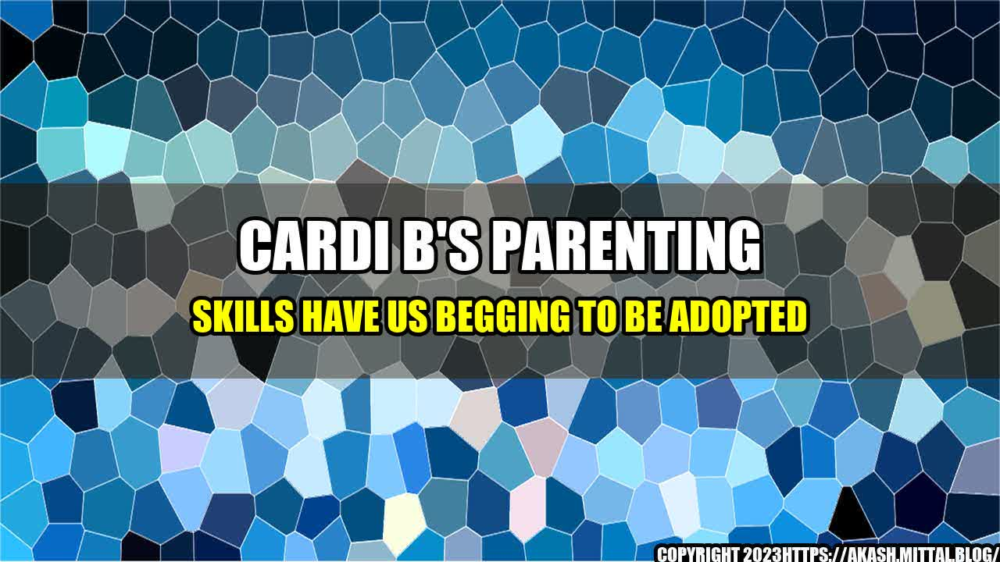

Cardi B's Parenting Skills Have Us Begging to Be Adopted

It's no secret that Cardi B is one of the most influential and successful female rappers in the game right now. But what many of us may not know is that Cardi is not only a talented artist, but also an amazing mother to her young daughter, Kulture.
Here are some quantifiable examples of Cardi B's top-notch parenting skills:
- Cardi frequently shares heartwarming pictures and videos of her daughter on social media, showcasing her love and affection for Kulture.
- Cardi is always hands-on with her daughter, whether it's spending quality time together, playing dress-up, or teaching her new things.
- Cardi always puts her daughter's needs first, even if it means sacrificing her busy schedule to be there for Kulture.
But it's not just her actions that set Cardi B apart as a great mom. It's her overall attitude towards motherhood that truly inspires us.
Cardi B's Parenting Philosophy
Cardi B has opened up several times about her experience as a mother and the values that guide her parenting style. Here are three key takeaways:
- Be present and engaged. Cardi has said that the most important thing to her as a mother is being present and engaged in her daughter's life. She believes that this means spending quality time with her, being attentive to her needs, and actively listening to her.
- Lead by example. Cardi has also emphasized the importance of setting a positive example for her daughter. She believes that her own behavior and attitude will influence Kulture's development, and strives to model responsible and loving behavior for her.
- Stay true to yourself. Finally, Cardi embraces her individuality as a mother and encourages other moms to do the same. She believes that there is no one "right" way to parent, and that each mother should trust her own instincts and do what feels best for her and her child.
Overall, Cardi B's parenting skills and philosophy serve as a powerful reminder that being a successful artist and a great mom are not mutually exclusive. With commitment, love, and a strong sense of self, any woman can thrive both personally and professionally.
Hashtags: #CardiB #parenting #motherhood #success #philosophy
Curated by Team Akash.Mittal.Blog
Share on Twitter Share on LinkedIn